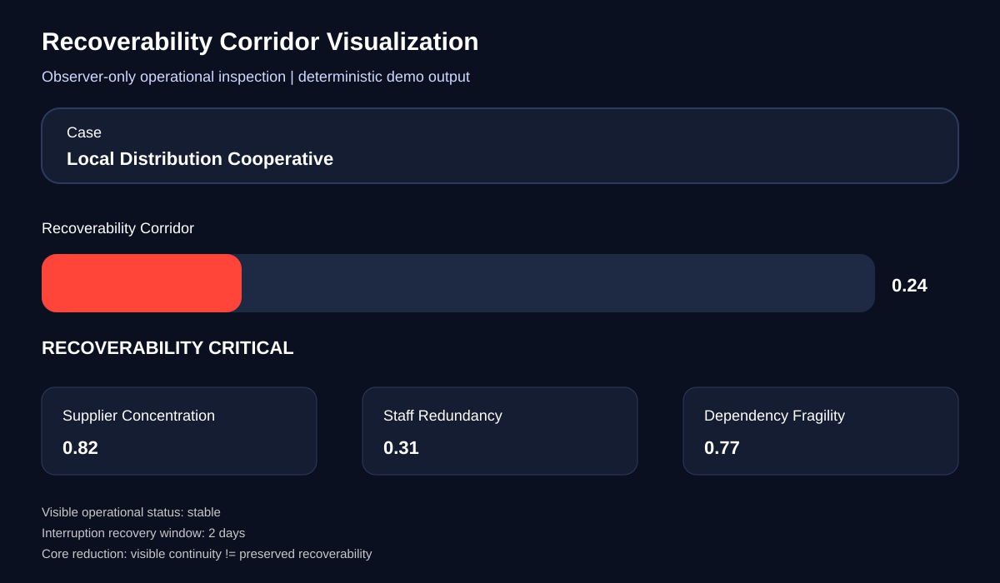
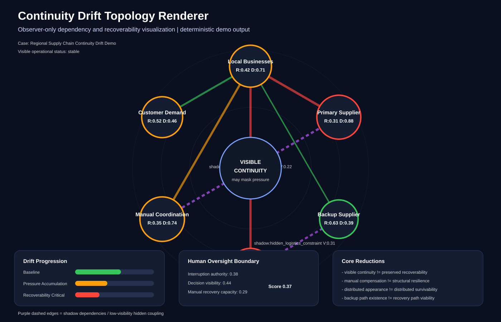

Core Reduction
A system may remain operational, measurable, reviewable, reproducible, and governable-looking while the practical ability to interrupt, recover, or localize failure progressively narrows underneath.
What The Observatory Inspects
Continuity Pressure
Where systems keep operating while hidden strain accumulates beneath visible stability.
Recoverability Corridors
Whether interruption, recovery, refusal, or correction pathways remain reachable.
Dependency Persistence
Where survivability concentrates through suppliers, workflows, infrastructure, or hidden coupling.
Human Oversight Boundaries
Whether decision visibility, interruption authority, and manual recovery capacity remain intact.
Public Demonstrators
The observatory includes bounded operational demo layers for inspecting where visible continuity may mask hidden recoverability pressure.
Recoverability Corridor

Shows visible continuity versus recoverability pressure.
Continuity Drift Topology

Shows dependency pressure, shadow coupling, drift progression, and oversight boundaries.
Continuity Drift Visualizer
Renders topology maps showing dependency pressure, shadow coupling, drift progression, and oversight boundaries.
Scenario Library
Includes supply chain continuity, AI oversight drift, hospital recoverability pressure, and cyber incident recoverability.
Outputs remain observer-only, deterministic, diagnostic-only, reproducible, and non-authoritative.
Example Operational Scenario
Regional Supply Chain Continuity
A regional logistics network appears operationally stable:
- deliveries still complete
- systems remain online
- dashboards remain green
- inventory continues moving
However underneath visible continuity:
- supplier concentration increases
- manual recovery pathways narrow
- backup routing assumptions degrade
- human oversight becomes increasingly dependent on automation
- hidden operational coupling accumulates
The system may therefore remain operational, measurable, and stable-looking while interruption viability and recoverability progressively degrade underneath continuation itself.
The observatory does not predict failure. It attempts to make hidden continuity pressure more inspectable under bounded and reproducible conditions.
How To Read The Maps
Continuity topology maps visualize dependency pressure and recoverability narrowing without claiming prediction, certification, governance authority, or operational command.
Center continuity may appear stable while outer dependency, recovery, or oversight paths degrade.
Current Demo Surfaces
tools/recoverability_corridor_demo/tools/continuity_drift_visualizer/tools/scenario_library/docs/public_demos/PUBLIC_DEMO_OVERVIEW.mddocs/map_reading_guides/HOW_TO_READ_CONTINUITY_TOPOLOGY_MAPS.md
What This Is Not
Repository
Review the source, tools, demo cases, and documentation here:
Final Constraint
When interruption viability, recoverability integrity, or localization capability cannot be sufficiently bounded, the observatory resolves toward HOLD rather than certainty.